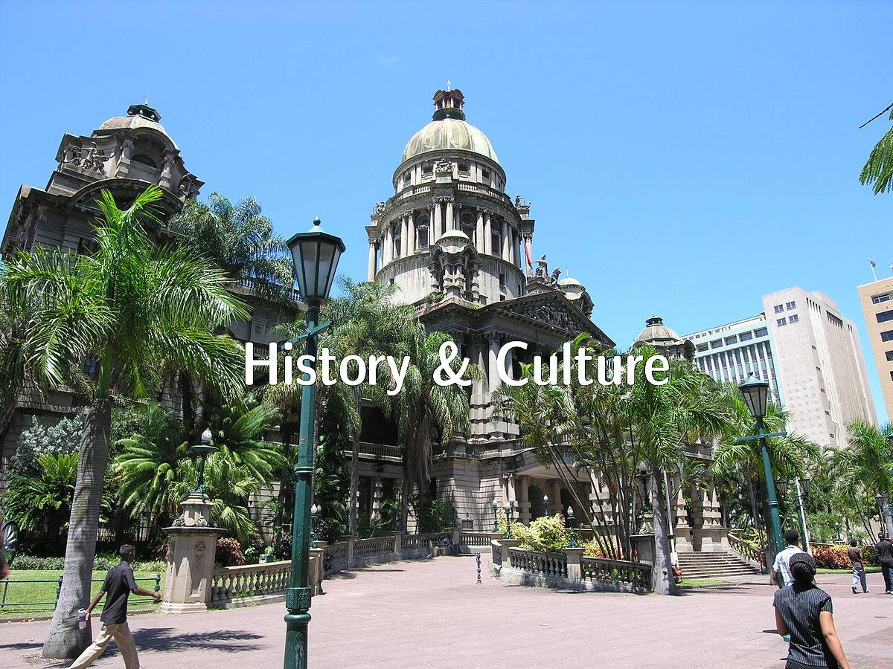

History & Culture
Learn about Durban's Cultural Heritage
Local Customs & Traditions
The rich cultural tapestry of Durban is woven from the customs and traditions of its diverse inhabitants, including the Zulu people, who have lived in the region for centuries. Visitors to Durban can experience the vibrant Zulu culture firsthand by attending traditional dance performances, visiting cultural villages, or taking part in interactive workshops on beadwork, pottery, and other crafts. In addition to the Zulu traditions, the Indian and British communities have left their mark on the city,
Local Food & Drinks
Durban's diverse population has given rise to a thriving food scene that reflects the city's multicultural heritage. Experience the city's signature dish, Bunny Chow – a hollowed-out loaf of bread filled with a flavorful curry, originating from Durban's Indian community. Taste the bold flavors of traditional Zulu dishes, such as Shisa Nyama, a popular barbecue-style meal, or sample the unique coastal cuisine at one of the city's many seafood restaurants. Don't forget to indulge in some of the local drinks, like the refreshing craft beers from Durban's microbreweries, or enjoy the famous South African wines from the nearby Cape Winelands. With its wide variety of tastes and influences, Durban's food scene is sure to delight your taste buds.
Upcoming Cultural Events
Take part in the annual Diwali Festival, a Hindu celebration of light that has become an integral part of Durban's cultural landscape. Explore the city's historic British colonial architecture, such as the Durban City Hall, or attend one of the many vibrant events, like the Durban International Film Festival, which showcases the city's thriving arts scene. No matter where your interests lie, Durban's diverse customs and traditions provide an unforgettable cultural experience.